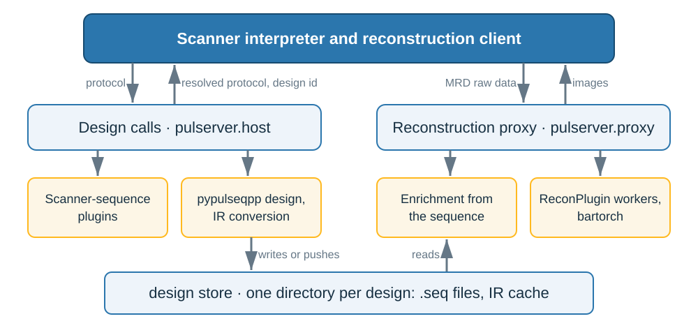
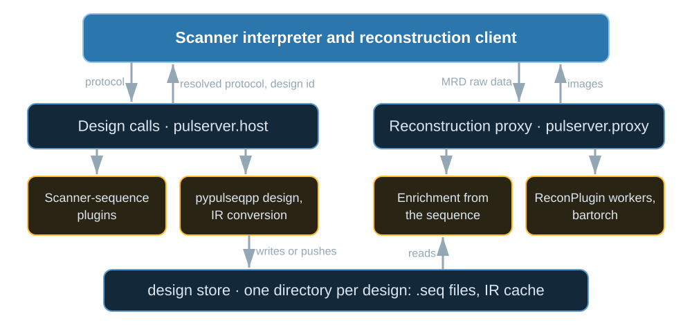

Architecture#
TL;DR
Two services: design calls on the scanner host, the reconstruction proxy on the reconstruction computer.
Each design is stored once, under the SHA-256 of what it depends on, and never modified.
The interpreter only presents, plays and streams; pypulseqpp designs and your plugin’s engine reconstructs.
You write a sequence plugin and a recon plugin. The design calls answer each protocol edit, design and check the sequence, and store it. The proxy receives each series, completes it from the stored design and runs your recon plugin. Lesson 1 of the Course runs one acquisition through both on the virtual scanner.
Capabilities#
Answers the interpreter’s design calls, one command per call or through a warm server.
Code:
pulserver design,pulserver.host. Tests: a forwarded call replies as the call answered in its own process; a crashing plugin fails only its call; a call is answered while another runs (test_design_server.py).Identifies a design by the SHA-256 of its plugin, sources, package versions, limits, VOP file and resolved protocol.
Code:
design_identity(). Tests: one resolved protocol is one design; an edited plugin is another design of the same protocol; a design is one of the VOP file contents its SAR ratios came from (test_design_service.py).Designs a request once, whether it arrives as typed or as resolved.
Code:
design_identity(). Test: a request is generated once whether or not it resolves to itself (test_design_service.py).Identifies an imported Pulseq chain by its files and the prescription it is imported at.
Code:
pulserver design import. Test: importing the same files at the same prescription is one design (test_design_service.py).Gives each design a 72-bit identifier that travels in three float32 fields of the raw-data header.
Code:
design_id(). Tests: a design identifier is three integers a float32 holds exactly; a design identifier holding another identity is refused (test_design_service.py).Writes a design whole or not at all, once, and never modifies it.
Code:
pulserver.host. Tests: a design being written is invisible until it is whole; two processes designing one protocol at once store it once; a stored design holds the files its manifest records and no other (test_design_service.py).Prunes the store least recently used first.
Code:
pulserver design prune. Tests: pruning removes the designs unused for longest first; a design found again is used again; pruning keeps a design used within the day whatever the limits (test_design_service.py).Pushes each design to a proxy on another computer, which stores it only if every file matches the manifest.
Code:
DesignIntake. Tests: a generation pushes the design it replies; the intake refuses a tampered bundle with the reason (test_design_push.py).Reads each design once on the reconstruction side and keeps the most recently read.
Code:
DesignCache. Tests: the least recently read design is read again when next named; a series naming no stored design is refused (test_proxy.py).Writes a log of each call and each reconstruction, including the output of the processes it spawns.
Code:
pulserver.host. Tests: a call naming a log file appends its outcome there (test_design_server.py); a logfile collects log output warnings and spawned children (test_logs.py).
Division of responsibility#
The interpreter shows the protocol, plays the IR cache and streams the raw data. It holds no sequence or reconstruction logic.
pypulseqpp designs the sequence; any Pulseq tool can supply an imported chain instead.
The reconstruction engine is whatever your recon plugin imports, usually bartorch.
Method#

The two services between the scanner and the engines, and the design store they share.#

The two services between the scanner and the engines, and the design store they share.#
Acquisition flow#
Each protocol edit: the call evaluates it with your plugin and replies with the achieved values and scan time (Protocol resolution).
Scan preparation: the call designs, checks (Safety checks), converts (PulSeg representation) and stores, and replies with the identifier.
Acquisition: the client streams MRD; the header names the design and the configuration names the recon plugin.
Reconstruction: the proxy completes the stream from the design (MRD enrichment) and runs your plugin in a worker (Reconstruction plugins and calibration context).
Design identity#
No design call keeps state; the store is all that persists. A changed plugin, sequence function, package version or VOP file is a new design of the same protocol. The identifier is the first 18 hexadecimal digits of the identity, split into three float32 header fields because a float32 holds every integer below \(2^{24}\) exactly.
Design store#
designs/
3f9c0a1b2c3d4e5f60/
sequence.seq first file of the NextSequence chain, binary Pulseq
sequence_main.seq the remaining files, when there are prescans
sequence.pseg IR cache
resolved.protocol
manifest.json identity and identifier, limits, package versions,
creation time, plugin and source, scan time,
field-of-view offset, SHA-256 of every file
The proxy reads the Pulseq files, not the cache: the cache is derived for playout, and the Pulseq files are the design of record.
Interfaces#
Representation |
Written by |
Read by |
|---|---|---|
Protocol block ( |
Design calls and interpreter |
Both; the grammar is in |
Pulseq files, binary form |
pypulseqpp, in a design call |
The IR conversion and the reconstruction proxy |
IR cache ( |
The interpreter, through the C library in |
|
MRD stream |
Reconstruction client; the proxy, when forwarding |
The proxy and its workers |
Orchestration is Python, the IR passes are C++ (src/cpp/ir/), and the library
the interpreter links is C89 (src/c/), for the vendor toolchains.
Examples#
1. Your first scan: one acquisition through both services on the virtual scanner.
Services: starting the two services, pushing designs and pruning the store.
Design calls: the design calls and the store.